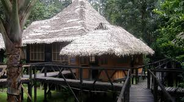
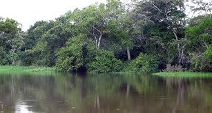
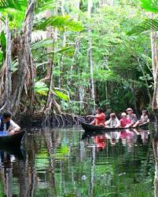
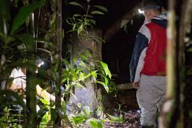
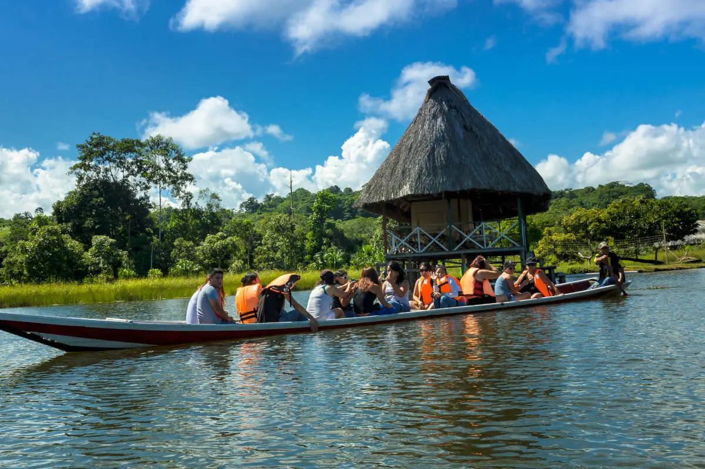

Naturaleza y EcoturismoNature & Ecotourism

Amacayacu National Park
El Parque Nacional Natural Amacayacu es uno de los destinos más importantes del Amazonas colombiano. Este parque protege una gran diversidad de flora y fauna, incluyendo especies en peligro de extinción. Los visitantes pueden realizar caminatas ecológicas guiadas, avistamiento de aves, y recorridos por la selva profunda que permiten comprender la importancia de la conservación ambiental. Además, es un espacio ideal para el turismo sostenible y la investigación científica.
Amacayacu National Park is one of the most important destinations in the Colombian Amazon. It protects a vast biodiversity, including endangered species. Visitors can enjoy guided jungle hikes, bird watching, and deep rainforest exploration while learning about environmental conservation. It is also ideal for sustainable tourism and scientific research.

Lago Tarapoto
El Lago Tarapoto es un ecosistema natural reconocido por la presencia de delfines rosados, una de las especies más emblemáticas del Amazonas. Este lugar ofrece recorridos en canoa, observación de fauna acuática y experiencias únicas en contacto con la naturaleza. Es un destino ideal para quienes buscan tranquilidad, paisajes impresionantes y una conexión directa con el entorno natural.
Tarapoto Lake is a natural ecosystem known for pink dolphins, one of the most iconic species of the Amazon. It offers canoe tours, wildlife observation, and unique experiences in close contact with nature. It is perfect for travelers seeking peace, scenic landscapes, and a deep connection with the environment.

Monkey Island
La Isla de los Micos es un atractivo turístico donde los visitantes pueden interactuar con diferentes especies de monos en un entorno controlado pero natural. Este lugar permite aprender sobre el comportamiento de estos animales y la importancia de proteger su hábitat. Es una experiencia educativa, divertida y única para todas las edades.
Monkey Island is a tourist attraction where visitors can interact with different monkey species in a natural environment. It allows people to learn about their behavior and the importance of protecting their habitat. It is an educational, fun, and unique experience for all ages.
Experiencias con FaunaWildlife Experiences

Birdwatching
La observación de aves es una de las actividades más destacadas en Leticia, ya que la región cuenta con una enorme diversidad de especies. Los tours guiados permiten identificar aves exóticas, aprender sobre sus hábitats y comprender su importancia ecológica. Es una experiencia ideal para amantes de la naturaleza y la fotografía.
Birdwatching is one of the most popular activities in Leticia, as the region hosts a vast diversity of bird species. Guided tours help visitors identify exotic birds, learn about their habitats, and understand their ecological importance. It is perfect for nature lovers and photographers.

Jungle Night Safari
El safari nocturno en la selva ofrece una experiencia única, donde los visitantes pueden explorar la vida nocturna del Amazonas. Durante el recorrido se pueden observar insectos, anfibios, y otros animales que solo salen de noche. Es una actividad emocionante y educativa.
The jungle night safari offers a unique experience, where visitors explore Amazon nightlife. You can observe insects, amphibians, and nocturnal animals. It is an exciting and educational activity.

Amazon River Tours
Los recorridos por el río Amazonas permiten descubrir paisajes impresionantes, comunidades locales y fauna acuática. Los turistas pueden navegar en lancha, aprender sobre la vida en el río y disfrutar de atardeceres únicos.
Amazon River tours allow visitors to discover stunning landscapes, local communities, and aquatic wildlife. Travelers can navigate by boat, learn about river life, and enjoy breathtaking sunsets.